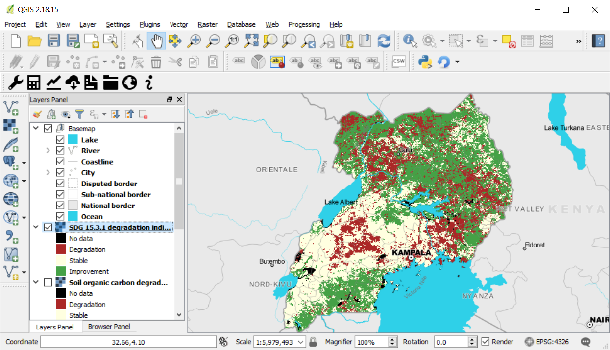

Charger les résultats et le fond de carte¶
Objectif: Apprenez comment charger dans QGIS les résultats d’une analyse précédente effectuée sur Trends.Earth, et comment charger une carte de base pour faciliter l’interprétation des modèles spatiaux affichés par les indicateurs.
Temps estimée d’achèvement: 15 minutes
Accès Internet: Requis seulement la première fois que vous chargez une carte de base, puisque l’information doit être téléchargée. Une fois les données stockées dans votre ordinateur, les cartes de base peuvent être chargées sans accès à Internet.
Pour charger les résultats de l’analyse précédente de Trends.Earth dans QGIS, cliquez sur l’icône (
 ) dans la barre d’outils de Trends.Earth.
) dans la barre d’outils de Trends.Earth.

Le menu Charger les données s’ouvre. Sélectionnez Charger et fichier de sortie TRENDS.EARTH existant dans la section Charger un jeu de données produit par TRENDS.EARTH.

Cliquez sur le bouton Parcourir dans la fenêtre Ouvrir un fichier Trends.Earth.

Dans la fenêtre Sélectionnez un fichier de résultats Trends.Earth, accédez au dossier dans lequel vous avez enregistré les données et sélectionnez le fichier à charger, puis cliquez sur Ouvrir.
Vous reviendrez à la fenêtre Ouvrir un fichier Trends.Earth, mais cette fois, vous verrez plusieurs couches répertoriées dans la section Sélectionnez une couche. Chacune de ces options est un groupe dans le fichier raster que vous avez téléchargé depuis Trends.Earth. Le nombre de bandes et d’informations spécifiques dans chacun d’eux varie, mais dans tous les cas, cet outil vous montrera des informations pour vous permettre de décider quelles couches afficher.
Dans ce cas, comme cette couche est le résultat de l’analyse en une étape (Calculer l’indicateur SDG), le fichier contient des informations sur la productivité des terres, la couverture terrestre et le carbone organique du sol.
Si vous voulez seulement voir la couche finale pour chacun des sous-indicateurs, laissez simplement la sélection par défaut et cliquez sur OK.
Les couches sélectionnées seront affichées sur la carte QGIS.

Ajout d’un fond de carte¶
Les cartes de base sont très utiles comme référence pour l’identification d’emplacements spécifiques dans les cartes. Une fois téléchargés, les résultats de Trends.Earth sont affichés sur un projet QGIS vide, ce qui pourrait limiter la capacité de l’utilisateur à identifier des lieux connus dans le paysage. Pour faciliter ce processus, vous pouvez utiliser l’outil Ajouter un fond de carte qui chargera les frontières de pays et d’état, les routes, les rivières, les villes, les littoraux et les plans d’eau avec des étiquettes au projet QGIS.
Pour charger l’outil, cliquez sur l’icône de l’outil Visualisations dans la barre d’outils Trends.Earth.

Cliquez sur Ajouter un fond de carte.

Dans la fenêtre Ajouter un fond de carte, vous pouvez effectuer l’une des deux opérations suivantes:
Utiliser une option de masque sélectionnée créera un masque bloquant toutes les informations en dehors de la zone sélectionnée. Dans cet exemple, toutes les informations en dehors de l’Ouganda ne seront pas affichées sur la carte. Cette option est utile lors de l’affichage des sous-indicateurs téléchargés à partir de Trends.Earth, car le téléchargement des données n’est pas limité aux limites administratives (un cadre de sélection est utilisé à la place). Vous pouvez utiliser les limites administratives du premier et du second niveau.
Utiliser une option de masque non sélectionnée chargera toutes les informations de référence, mais aucun masque ne sera appliqué.
La première fois que vous lancerez cet outil après l’installation de Trends.Earth, les informations seront téléchargées sur Internet, alors assurez-vous que vous êtes connecté. La barre de progression indiquera le pourcentage de la tâche terminée. Les données resteront stockées dans votre ordinateur pour une utilisation future.
Une fois le fond de carte chargé, vous remarquerez les informations ajoutées à la carte et au panneau Calque. Le fond de carte contient des informations pour:

Lac
rivière
Littoral
Ville
Frontière contestée
Frontière infranationale
Frontière nationale
Océan